콘크리트기사 (2015-03-08 기출문제)
1과목: 재료 및 배합
1. 콘크리트용 재료에 대해 주어진 상황에 따라 실시한 재료시험으로 틀린 것은?
- 석고를 10% 첨가하여 제조한 시멘트를 사용하면 시멘트 경화체의 이상팽창을 일으킬 수 있으므로 길모어 침에 의한 응결시험을 실시하였다.
- 시멘트의 저장기간이 오래되어 대기 중 수분 및 이산화탄소를 흡수하였을 가능성이 있으므로 비중시험을 실시하였다.
- 안정성이 나쁜 골재를 사용하면 콘크리트의 동결융해 작용에 대한 내구성이 저하하므로 황산나트륨 용액에 의한 안정성 시험을 실시하였다.
- 바다모래를 사용하면 콘크리트 중의 철근 부식을 일으킬 수 있으므로 골재 중의 염화물 함유량 시험을 실시하였다.
(정답률: 73%)

2. 다음 중 골재에 관한 설명으로 옳지 않은 것은?
- 조립률의 값이 커질수록 골재의 평균입자 크기도 커진다.
- 일반적으로 굵은 골재의 최대치수가 클수록 콘크리트의 강도, 경제성, 내구성면에서 유리하다.
- 일반적으로 0.3mm 이하의 미세입자가 부족하면 콘크리트의 재료분리가 발생되기 쉽다.
- 일반적으로 골재의 밀도가 클수록 흡수율도 작으며 내구성면에서 유리하다.
(정답률: 68%)
3. 콘크리트용 골재로서 갖추어야 할 성질에 대한 설명으로 틀린 것은?
- 마모에 대한 저항성이 크고, 강고(强固)해야 한다.
- 크고 작을 알맹이의 혼합정도 즉, 입도가 좋아야 한다.
- 깨끗하여야 하며 미분말이 많아야 좋다.
- 소요의 중량을 가지고 있고, 물리, 화학적 내구성이 커야 한다.
(정답률: 83%)
4. 플라이 애시 품질을 규정하기 위한 시험항목이 아닌 것은?
- 염화물이온량
- 강열감량
- 분말도
- 이산화규소
(정답률: 44%)
5. 골재 시험 결과 골재의 단위용적질량이 1,700kg/m3, 골재의 절건 밀도가 2.65g/cm3일 때 이 골재의 공극률은?
- 35.85%
- 64.15%
- 57.26%
- 42.74%
(정답률: 49%)
6. 콘크리트 배합에서 굵은 골재의 최대치수에 관한 규정으로 틀린 것은?
- 일반적인 구조물의 경우 굵은 골재의 최대치수는 20mm 또는 25mm로 한다.
- 굵은 골재의 최대치수는 거푸집 양 측면 사이의 최소 거리의 1/5을 초과해서는 안된다.
- 굵은 골재의 최대치수는 개별 철근, 다발철근, 긴장재 또는 덕트 사이 최소 순간격의 3/4을 초과해서는 안된다.
- 굵은 골재의 최대치수는 슬래브 두께의 2/3을 초과해서는 안된다.
(정답률: 69%)
7. 포틀랜드 시멘트의 주원료로서 양이 많은 것부터 차례로 나열된 것은?
- 석회석 ＞ 점토 ＞ 규석
- 석회석 ＞ 석고 ＞ 점토
- 석고 ＞ 점토 ＞ 석회석
- 규석 ＞ 석회석 ＞ 점토
(정답률: 78%)
8. 신선한 시멘트의 일반적인 강열감량(强熱減量)은 어느 정도인가?
- 0.6~0.8%
- 1.0~1.2%
- 1.5~1.7%
- 2.1~2.3%
(정답률: 50%)
9. 표면건조포화상태의 골재에 함유되어 있는 전체수량의 절건상태 골재 질량에 대한 백분율을 무엇이라 하는가?
- 전함수율
- 표면수율
- 유효흡수율
- 흡수율
(정답률: 53%)
10. 압축강도 시험의 기록이 없는 경우 콘크리트 배합강도로 틀린 것은? (단, fck는 콘크리트의 설계기준 압축강도)
- fck가 20MPa인 경우 배합강도는 27MPa
- fck가 28MPa인 경우 배합강도는 36.5MPa
- fck가 31MPa인 경우 배합강도는 39.5MPa
- fck가 40MPa인 경우 배합강도는 52MPa
(정답률: 71%)
11. 아래의 표와 같이 콘크리트 시방배합을 하였다. 잔골재의 표면 수량이 3.5%이고, 굵은 골재의 표면 수량이 1.5%일 때 현장배합으로 수정할 경우 단위수량은?
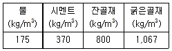
- 131kg
- 148kg
- 202kg
- 219kg
(정답률: 67%)
12. 골재에 포함된 불순물의 영향이 잘못 짝지워진 것은?
- 푸민산 - 시멘트 수화반응 방해
- 유황 - 시멘트 페이스트의 수축 및 골재와의 부착력 저하
- 염분 - 수화반응 촉진 및 철근부식
- 조개껍질 - 콘크리트강도 저하
(정답률: 55%)
13. 시멘트의 강도 시험방법(KS L ISO 679)에 의해 시멘트의 압축강도 시험을 실시하고자 한다. 시멘트 450g을 사용하여 공시체를 제작할 때 모래의 사용량은?
- 900g
- 1,125g
- 1,350g
- 1,800g
(정답률: 80%)
14. 콘크리트의 설계기준 압축강도가 40MPa이고, 15회의 압축강도 시험실적으로부터 구한 표준편차가 5MPa인 경우 배합강도를 구하면? (단, 표준편차의 보정계수를 사용하여 구할 것)
- 46.70MPa
- 47.78MPa
- 49.52MPa
- 50.02MPa
(정답률: 48%)
15. 콘크리트에 사용되는 혼화제에 관하여 옳지 않은 것은?
- AE제는 콘크리트 속에 독립된 미세한 공기포를 연행시켜 작업성 및 동결융해에 대한 저항성을 향상시킨다.
- 감수제는 시멘트 입자를 분산하여 콘크리트의 단위수량을 감소시킨다.
- 유동화제는 작업성을 향상시키기 위하여 사용되며 일반적으로 타설직전 현장에서 첨가한다.
- 고성능 AE감수제는 시멘트의 수화반응을 화학적으로 촉진하여 콘크리트의 응결시간을 촉진시킨다.
(정답률: 48%)
16. 콘크리트의 배합설계에서 잔골재율이 콘크리트에 미치는 영향을 설명한 것으로 틀린 것은?
- 일반적으로 잔골재율을 작게 하면 소요 워커빌리티의 콘크리트를 얻기 위한 단위수량이 감소한다.
- 잔골재의 조립률을 확인하여 그 변화 차이가 ±0.2 이상이 되면 잔골재율이나 단위수량을 변경하여야 한다.
- 잔골재율이 너무 작으면 콘크리트는 거칠고 재료 분리가 일어나는 경향이 크다.
- 잔골재율을 작게 하면 단위용적당 시멘트의 사용량이 증가하여 비경제적이다.
(정답률: 31%)
17. 골재의 단위 용적 질량 및 실적률 시험(KS F 25⑤)에 대한 설명으로 틀린 것은?
- 사용하는 시료는 절건 상태로 하여야 하지만, 굵은 골재의 경우는 기건 상태이어도 좋다.
- 시료를 채우는 방법은 봉 다지기에 따라야 하지만, 굵은 골재의 치수가 커서 봉다지기가 곤란한 경우는 충격에 의한 방법을 따른다.
- 2회의 시험의 평균값을 시험 결과로 하며, 단위 용적 질량의 평균값에서의 차는 0.1kg/L 이하이어야 한다.
- 구조용 경량 골재도 이 시험방법을 따른다.
(정답률: 46%)
18. 콘크리트 압축강도 시험결과가 다음과 같을 경우 표준 편차는 얼마인가? (단, 불편분산의 개념에 의해 구하시오.)
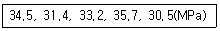
- 2.14MPa
- 2.92MPa
- 2.14%
- 2.92%
(정답률: 53%)
19. 20℃에서 골재의 밀도시험을 한 결과가 아래의 표와 같을 때 표면건조 포화상태의 밀도는?
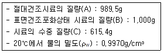
- 2.52g/cm3
- 2.56g/cm3
- 2.59g/cm3
- 2.63g/cm3
(정답률: 36%)
20. 굵은 골재의 밀도 및 흡수율 시험(KS F 2503)을 실시하기 위해 시료를 준비하고자 한다. 아래표의 조건과 같은 경량골재인 경우 1회 시험에 사용하는 시료의 최소 질량은? (단, KS 규정에 따라 구하시오.)
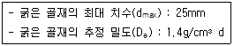
- 1kg
- 1.4kg
- 3kg
- 3.8kg
(정답률: 43%)
2과목: 제조, 시험 및 품질관리
21. AE 콘크리트의 성질로 가장 거리가 먼 것은?
- 콘크리트의 워커빌리티 개선 효과가 있다.
- 공기량을 증가 시키면 압축강도 및 훰강도는 저하하는 경향이 있다.
- 콘크리트의 블리딩을 감소시킨다.
- 내부 공극이 증가하여 동결융해 저항성이 저하한다.
(정답률: 52%)
22. 콘크리트의 품질관리에 있어서의 7가지 관리도구에 포함되지 않는 것은?
- 산포도
- 히스토그램
- 체크리스트
- 피드백
(정답률: 58%)
23. 콘크리트 압축강도 시험에서 공시체의 검사에 대한 설명으로 틀린 것은?
- 공시체의 지름은 0.1mm, 높이는 1mm까지 측정한다.
- 공시체의 지름은 높이의 중앙에서 서로 직교하는 2방향에 대하여 측정한다.
- 질량의 0.25% 이하의 눈금을 가진 저울로 질량을 측정한다.
- 공시체의 질량은 건조로에서 충분히 건조시킨 후 측정한다.
(정답률: 41%)
24. 구속되어 있는 무근 콘크리트 부재의 건조 수축률이 100×10-6일 때 콘크리트에 작용하는 응력의 종류와 크기는? (단, 콘크리트의 탄성계수는 30GPa이다.)
- 인장응력 3.0MPa
- 압축응력 3.0MPa
- 인장응력 30MPa
- 압축응력 30MPa
(정답률: 44%)
25. 콘크리트의 비비기에 대한 설명으로 틀린 것은?
- 시험을 실시하지 않은 경우 강제식 믹서의 비비기 시간은 1분 이상을 표준으로 한다.
- 시험을 실시하지 않은 경우 가경식 믹서의 비비기 시간은 1분 30초 이상을 표준으로 한다.
- 비비기는 미리 정해둔 비비기 시간의 2배 이상 계속하지 않아야 한다.
- 연속믹서를 사용할 경우, 비비기 시작 후 최초에 배출되는 콘크리트는 사용하지 않아야 한다.
(정답률: 66%)
26. 레디믹스트 콘크리트의 운반차에 대한 아래 표의 설명에서 ( )안에 적합한 값은?
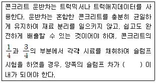
- 10mm
- 20mm
- 30mm
- 40mm
(정답률: 64%)
27. 레디믹스트 콘크리트(KS F 4009) 품질에 대한 기준으로 옳지 않은 것은?
- 염화물 함유량은 염소 이온(Cl-)량으로서 일반적인 경우 0.3kg/m3 이하로 한다.
- 1회의 강도시험 결과는 구입자가 지정한 호칭 강도값의 80% 이상이어야 한다.
- 3회의 강도시험 결과의 평균치는 구입자가 지정한 호칭 강도값 이상이어야 한다.
- 공기량은 보통콘크리트의 경우 4.5%이며, 그 허용오차는 ±1.5%로 한다.
(정답률: 53%)
28. 다음 보기를 보고 품질관리의 순서로 가장 적합한 것은?
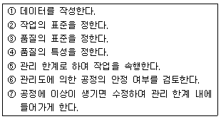
- ④ - ③ - ② - ① - ⑥ - ⑤ - ⑦
- ③ - ⑦ - ② - ① - ⑥ - ⑤ - ④
- ② - ③ - ④ - ⑦ - ⑥ - ⑤ - ①
- ③ - ① - ④ - ⑤ - ⑥ - ② - ⑦
(정답률: 52%)
29. 굳지 않은 콘크리트의 워커빌리티 측정법 중 진동대 위에 원통용기를 고정시켜 놓고 그 속에 슬럼프시험과 같이 콘에 2층으로 콘크리트를 채우고 콘을 연직으로 들어올린 후, 투명한 플라스틱 원판을 콘크리트 면 위에 놓고 진동을 주어 원판의 전면에 콘크리트가 완전히 접할때까지의 시간을 초로 측정하는 시험법은?
- 비비시험
- 다짐계수시험
- 흐름시험
- 리몰딩시험
(정답률: 48%)
30. ø100mm×200mm인 원주형 콘크리트 표준공시체에 대하여 압축강도 시험결과, 200kN의 하중에서 파괴되었다. 이 공시체의 압축강도는?
- 0.01MPa
- 10.0MPa
- 25.5MPa
- 101.9MPa
(정답률: 63%)
31. 1일 콘크리트 사용량이 약 200m3인 경우 필요한 믹서의 용량은? (단, 1일 작업시간은 8시간, 1회 비벼내기 시간 2분, 작업효율 E=0.8이다.)
- 0.55m3
- 1.04m3
- 1.55m3
- 2.04m3
(정답률: 56%)
32. 관입저항침에 의한 콘크리트의 응결시간 시험(KS F 2436)에 사용하는 재하장치에 대한 설명으로 옳은 것은?
- 정확도 1N으로 관입력 (penetration force)을 잴 수 있고 최소 용량 60N을 가진 것
- 정확도 10N으로 관입력 (penetration force)을 잴 수 있고 최소 용량 60N을 가진 것
- 정확도 20N으로 관입력 (penetration force)을 잴 수 있고 최소 용량 60N을 가진 것
- 정확도 10N으로 관입력 (penetration force)을 잴 수 있고 최소 용량 600N을 가진 것
(정답률: 38%)
33. 콘크리트의 압축강도 시험 방법에 대한 설명으로 틀린 것은?
- 상하의 가압판의 크기는 공시체의 지름 이상으로 하고, 두께는 25mm 이상으로 한다.
- 공시체를 공시체 지름의 5% 이내의 오차에서 그 중심축이 가압판의 중심과 일치하도록 놓고 시험을 실시한다.
- 하중을 가하는 속도는 압축 응력도의 증가율이 매초(0.6±0.4)MPa이 되도록 한다.
- 시험기의 가압판과 공시체의 사이에 쿠션재를 넣어서는 안 된다. (다만, 언본드 캐핑에 의한 경우는 제외한다.)
(정답률: 36%)
34. 콘크리트 재료의 계량에 대한 설명으로 틀린 것은?
- 1배치량은 콘크리트의 종류, 비비기 설비의 성능, 운반 방법, 공사의 종류, 콘크리트의 타설량 등을 고려하여 정하여야 한다.
- 각 재료는 1배치씩 용적으로 계량하는 것을 원칙으로 한다. 다만, 물과 혼화재는 질량으로 계량해도 좋다.
- 소규모 공사에서 시멘트나 혼화재가 포대로 공급되고, 1포대의 질량이 소정량 이상인 경우에는 포대단위로 계량해도 좋다.
- 계량은 현장 배합에 의해 실시하는 것으로 한다.
(정답률: 62%)
35. 콘크리트의 블리딩에 관한 설명으로 틀린 것은?
- 일종의 재료분리 현상이다.
- 잔골재의 조립률이 클수록 블리딩이 작아진다.
- 단위수량이 큰 배합일수록 블리딩이 많아진다.
- AE제를 사용하면 단위수량을 감소시켜서 블리딩을 줄일 수 있다.
(정답률: 57%)
36. 콘크리트의 길이변화 시험에 대한 설명으로 틀린 것은?
- 콘크리트의 건조수축 특성을 평가하기 위해 실시한다.
- 공시체의 개수는 동일 조건의 시험에 대해 3개 이상으로 한다.
- 공시체의 측면 길이 변화를 측정하기 위해서는 다이얼 게이지 방법을 사용하여야 한다.
- 사용하는 콘크리트 공시체의 나비는 높이와 같이하되, 굵은 골재의 최대 치수의 3배 이상으로 한다.
(정답률: 56%)
37. 콘크리트 재료의 1회 계량분에 대한 계량의 허용오차로 옳은 것은?
- 골재 : ±3%
- 혼화제 : ±2%
- 시멘트 : ±2%
- 혼화재 : ±3%
(정답률: 72%)
38. 콘크리트의 강도에 대한 일반적인 설명으로 틀린 것은?
- 골재의 강도는 시멘트풀의 강도보다 작으므로 일반적으로 골재 강도의 변화에 따라 콘크리트의 강도가 좌우되는 경향이 있다.
- 일반적으로 콘크리트의 강도라 하면 압축강도를 말한다.
- 물-결합재비가 일정한 콘크리트에서 공기량이 1% 증가하는데 따라 압축강도는 4~6%정도 감소한다.
- 혼합을 충분한 시간에 걸쳐 실시할 경우 시멘트와 물과의 접촉이 좋게 되기 때문에 일반적으로 강도는 증대한다.
(정답률: 48%)
39. 현장에서 타설하는 콘크리트를 대상으로 압축강도에 의한 콘크리트의 품질검사를 실시하고자 한다. 하루에 300m3의 콘크리트가 제조 및 타설된다면 검사 횟수는? (단, 1회 시험값은 공시체 3개의 압축강도 시험값의 평균값이며, 콘크리트표준시방서의 규정에 따른다.)
- 2회
- 3회
- 4회
- 5회
(정답률: 65%)
40. 콘크리트에 일정한 하중이 지속적으로 작용되면, 하중(응력)의 변화가 없어도 콘크리트의 변형은 시간의 경과와 함께 증가하는데, 이와 같은 콘크리트의 성질을 무엇이라고 하는가?
- 피로강도
- 포와송비
- 크리프
- 응력-변형률 곡선
(정답률: 58%)
3과목: 콘크리트의 시공
41. 다음은 숏크리트 타설시 뿜어 붙일 면에 용수가 있을 경우의 대책이다. 옳지 않은 것은?
- 사면에 용수가 있을 경우에는 필터재, 시트를 부착하여 용수의 배수처리를 한다.
- 부분적으로 용수가 있을 때는 염화비닐 파이프, 비닐 호스 등으로 용수를 처리한다.
- 암반의 절리 등에 용수가 있을 때는 배수구 등으로 용수를 처리한다.
- 뿜어 붙일 면보다 소량의 침출수가 있을 때는 습식 숏크리트 공법을 사용한다.
(정답률: 68%)
42. 신축이음에 대한 설명 중 틀린 것은?
- 신축이음에는 필요에 따라 이음재, 지수판 등을 배치하여야 한다.
- 신축이음의 단차를 피할 필요가 있는 경우에는 장부나 홈을 두는 것이 좋다.
- 신축이음은 양쪽의 구조물 혹은 부재가 구속된 구조이어야 한다.
- 신축이음의 단차를 피할 필요가 있는 경우에는 전단연결재를 사용하는 것이 좋다.
(정답률: 52%)
43. 해양콘크리트의 물-결합재비의 결정에 대한 설명으로 틀린 것은? (단, 내구성에 의해 정해지는 물-결합재비로서 일반 현장 시공의 경우)
- 해풍의 작용을 심하게 받는 육상구조물인 경우 최대 물-결합재비는 40%이다.
- 해당 대기 중인 경우 최대 물-결합재비는 45%이다.
- 물보라 지역, 간만대 지역인 경우 최대 물-결합재비는 40%이다.
- 해중 환경인 경우 최대 물-결합재는 50%이다.
(정답률: 35%)
44. 콘크리트 균열에 대한 설명으로 틀린 것은?
- 플라스틱 수축균열을 응결과정 중 급속한 건조를 받는 표면 부분에 발생한다.
- 침하균열은 거푸집과 지보공의 강성 부족으로 인한 침하가 그 원인이다.
- 건조수축균열은 건조에 의한 수촉변형이 내부와 외부로부터의 구속을 받아 발생한다.
- 알칼리 골재반응에 의한 균열로 콘크리트 표면에 불규칙하게 생긴다.
(정답률: 47%)
45. 일평균 기온이 10℃이고, 보통 포틀랜드시멘트를 사용한 콘크리트의 습윤양생기간의 표준으로 옳은 것은?
- 3일
- 5일
- 7일
- 9일
(정답률: 45%)
46. 콘크리트의 타설에 대한 설명으로 틀린 것은?
- 타설작업은 콘크리트에 콜드조인트가 생기지 않고 다짐이 충분히 될 수 있는 범위 내에서 연속적으로 타설한다.
- 일반적으로 먼저 타설한 콘크리트에 영향을 주지 않기 위하여 운반거리가 가까운 장소로부터 콘크리트를 타설한다.
- 2층 이상으로 나누어 콘크리트를 타설하는 경우에는 아래층의 콘크리트가 굳기 시작하기 전에 위층의 콘크리트를 타설한다.
- 슈트, 펌프배관, 버킷, 호퍼 등의 배출구와 타설면까지의 높이는 1.5m 이하를 원칙으로 한다.
(정답률: 66%)
47. 매스콘크리트에 대한 설명으로 틀린 것은?
- 저발열형 시멘트는 장기 재령의 강도 증진이 보통 포틀랜드 시멘트에 비하여 크므로, 91일 정도의 장기 재령을 설계기준압축강도의 기준 재령으로 하는 것이 좋다.
- 혼화재료로서 고로 슬래그 미분말을 혼입하면 특히, 콘크리트의 타설온도가 높을 경우 발열량을 감소시키는 효과가 뛰어난다.
- 굵은 골재의 최대 치수는 작업성이나 건조수축 등을 고려하여 되도록 큰 값을 사용하여야 한다.
- 콘크리트의 비비기 온도를 제어할 목적으로 얼음을 사용하는 경우에는 비빌 때 얼음덩어리가 콘크리트 속에 남아있지 않도록 하여야 한다.
(정답률: 28%)
48. 한중 콘크리트는 하루의 평균기온이 몇℃ 이하로 되는 것이 예상되는 기상조건하에서 시공하는 것이 원칙인가?
- -2℃
- 0℃
- 2℃
- 4℃
(정답률: 70%)
49. 숏크리트의 건식법에 대한 설명으로 잘못된 것은?
- 일반적인 압송거리는 습식법에 비하여 장거리 수송이 적당하지 못하며 100m 정도에 한정되어 사용된다.
- 시공 도중에 분진발생이 많고 골재가 튀어나오는 등의 단점이 있다.
- 습식법에 비하여 작업원의 능력과 숙력도에 따라 품질이 크게 좌우된다.
- 건식법은 시멘트와 골재를 건비빔(dry mix) 시켜서 노즐까지 보내어 여기서 물과 합류시키는 공법이다.
(정답률: 58%)
50. 포장 콘크리트의 시공에 사용되는 이음판의 필요한 성질에 대한 설명으로 틀린 것은?
- 콘크리트 슬래브의 팽창을 어느 정도까지는 허용하나, 콘크리트를 다질 때 현저하게 줄어들 정도로 압축저항이 적지 않을 것
- 콘크리트 슬래브가 수축할 때는 가능한 원래의 두께로 되돌아 올 것
- 흡수성과 투수성이 클 것
- 휘어지거나 비틀어지지 않고 시공이 간편할 것
(정답률: 63%)
51. 다음 중 시공이음에 관한 설명으로 옳지 않은 것은?
- 시공이음은 부재의 압축력이 작용하는 방향과 수평이 되게 설치한다.
- 시공이음은 될 수 있는 대로 전단력이 작은 위치에서 설치한다.
- 해양 및 콘크리트 구조물 등에 부득이 시공이음부를 설치한 경우에는 만조위로부터 위로 0.6m와 간조위로부터 아래로 0.6m 사이인 감조부 부분을 피하여야 한다.
- 시공이음부에 다음 콘크리트를 타설하기 위해서는 물을 고압분사 시켜서 청소를 하거나 콘크리트 표면에 물을 충분히 흡수시킨 후 새로운 콘크리트를 타설하여야 한다.
(정답률: 63%)
52. 댐콘크리트에 대한 설명으로 옳은 것은?
- 댐콘크리트용 시멘트는 고발열형, 단기강도 증진형이 바람직하다.
- 댐콘크리트는 일반적으로 단위 시멘트량이 높은 부배합으로 한다.
- 롤러다짐 콘크리트의 반죽질기는 VC시험으로 20±10초를 표준으로 한다.
- 댐콘크리트에는 중용열포틀랜드시멘트와 플라이 애시시멘트는 사용하지 않는 것이 원칙이다.
(정답률: 44%)
53. 섬유보강 콘크리트의 배합 및 비비기에 대한 설명으로 틀린 것은?
- 강섬유보강 콘크리트의 경우, 소요 단위수량은 강섬유의 혼입률에 거의 비례하여 증가한다.
- 믹서는 가경식 믹서를 사용하는 것을 원칙으로 한다.
- 배합을 정할 때에는 일반 콘크리트의 배합을 정할 때의 고려사항과 콘크리트의 휨강도 및 인성이 소요의 값으로 되도록 고려할 필요가 있다.
- 믹서에 투입된 섬유의 분산에 필요한 비비기 시간을 섬유의 종류나 혼입률에 따라 다르다.
(정답률: 68%)
54. 섬유보강 콘크리트에 대한 일반적인 설명으로 틀린 것은?
- 인장강도와 균열에 대한 저항성이 높다.
- 사용되는 섬유에는 대표적으로 강섬유, 내알칼리성 유리섬유, 폴리프로필렌섬유, 탄소섬유, 아라미드섬유 및 여러 가지 합성섬유 등이 있다.
- 섬유보강 콘크리트용 섬유의 탄성계수는 시멘트 결합재 탄성계수의 1/10 이상이며, 형상비가 30 이상이어야 한다.
- 콘크리트에 대한 강섬유 혼입률의 범위는 용적 백분율로 0.5~2.0% 정도이다.
(정답률: 57%)
55. 프리플레이스트 콘크리트에 사용되는 주입 모르타르에 대한 설명으로 틀린 것은?
- 주입 모르타르는 공사의 규모 등을 고려하여 유동성 및 유동성 유지시간을 갖는 것이어야 한다.
- 대규모 프리플레이스트 콘크리트에 사용하는 주입 모르타르는 시공 중에 재료 분리를 적게 하기 위해 부배합으로 하여야 한다.
- 팽창률은 블리딩의 5배 정도 이상이 바람직하며, 팽창률이 작으면 모르타르 속의 공극을 크게 하여 해롭다.
- 깊은 해수 중에 시공할 경우에는 압력을 받는 모르타르의 팽창률이 적정 값이 되도록 보일의 법치에 의하여 팽창재의 혼입량을 증가시켜야 한다.
(정답률: 50%)
56. 경량골재 콘크리트에 대한 설명으로 틀린 것은?
- 슬럼프는 일반적인 경우 150~210mm를 표준으로 한다.
- 경량골재 콘크리트의 공기량은 일반 골재를 사용한 콘크리트보다 1% 크게 하여야 한다.
- 콘크리트의 수밀성을 기준으로 물-결합재비를 정할 경우에는 50% 이하를 표준으로 한다.
- 경량골재 콘크리트는 공기연행 콘크리트로 하는 것을 원칙으로 한다.
(정답률: 44%)
57. 트레미를 이용한 일반 수중콘크리트 타설에 대한 설명으로 틀린 것은?
- 트레미의 안지름은 수심 3m 이내에서 250mm 정도가 좋다.
- 트레미의 안지름은 굵은 골재 최대치수의 8배 이상이 되도록 하여야 한다.
- 트레미 1개로 타설할 수 있는 면적이 지나치게 크지 않도록 하여야 하며, 30m2 이하로 하여야 한다.
- 트레미는 콘크리트를 타설하는 동안에 다짐을 좋게 하기 위하여 수시로 수평 이동시켜야 한다.
(정답률: 57%)
58. 프리플레이스트 콘크리트의 압송 및 주입에 관한 설명으로 옳지 않은 것은?
- 수송관을 통과하는 모르타르의 평균유속은 0.5~2.0m/sec 정도가 되도록 한다.
- 시공 중 모르타르 주입을 주기적으로 중단시켜 시공이음이 발생하도록 유도하여 온도변화 및 건조수축 등에 의한 균열 발생을 제어하여야 한다.
- 수송관의 연장은 짧게 하여야 하며, 연장이 100m 이상일 경우에는 중계용 애지테이터와 펌프를 사용한다.
- 연직주입과 및 수평주입관의 수평간격은 2m 정도를 표준으로 한다.
(정답률: 43%)
59. 고강도 콘크리트의 정의에 대한 아래 표의 설명에서 ( )에 적합한 수치는?
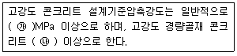
- ㉮ 35, ㉯ 24
- ㉮ 35, ㉯ 27
- ㉮ 40, ㉯ 24
- ㉮ 40, ㉯ 27
(정답률: 58%)
60. 콘크리트 제품에 관한 설명으로 옳지 않은 것은?
- 오토클레이브 양생한 콘크리트 제품은 고온과 고압이 요구된다.
- 원심력 성형을 하면 치밀한 콘크리트를 얻을 수 있다.
- 상압 증기 양생은 보통 타설 후 몇 시간이 경과한 다음에 실시한다.
- PC파일은 대부분 포스트텐션 방식으로 제조된다.
(정답률: 52%)
4과목: 구조 및 유지관리
61. 그림과 같은 형단면에 3-D38(As=3,420mm)의 철근이 배근되었다면 설계휨강도 øMn의 크기는? (단, fck=21MPa, fy=400MPa이다.)
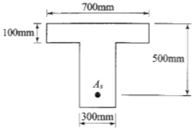
- 504.8kNㆍm
- 517.1kNㆍm
- 524.8kNㆍm
- 537.1kNㆍm
(정답률: 38%)
62. 교량 바닥판 상면 두께 증설공법의 특징으로 적절하지 않은 내용은?
- 일반 포장용 기계를 쓸 수 있고 공기가 짧다
- 공종 항목이 적고, 고도의 시공 기술이 요구되지 않는다.
- 바닥판 강성과 균열 저항성이 증가한다.
- 고정하중의 증대가 따르므로 증가되는 바닥판 두께가 제한된다.
(정답률: 52%)
63. 그림과 같은 단면을 가진 보를 강도설계법으로 설계할 경우 최소 철근량(As1min)은? (단, 해석에 의하여 인장철근 보강이 요구되는 경우로서 fck=35MPa, fy=400MPa이다.)
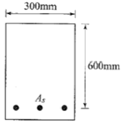
- 600mm2
- 630mm2
- 666mm2
- 696mm2
(정답률: 35%)
64. 그림과 같은 단면에 As=4-D25(2,028mm2)이 배근되어 있고, 계수전단력 Vu=200kN, 계수휨모멘트 Mu=40kNㆍm가 작용하고 있는 보가 있다. 콘크리트가 부담할 수 있는 전단강도(Vc)를 정밀식을 사용하여 구하면? (단, fck=21MPa, fy=400MPa 이고 Mu는 전단을 검토하는 단면에서 Vu와 동시에 발생하는 계수휨모멘트이다.)
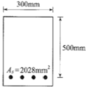
- 237.6kN
- 199.3kN
- 145.7kN
- 107.6kN
(정답률: 38%)
65. 직접 설계법에 의한 슬래브 설계에서 전체 정적 계수 휨모멘트 Mo=320kNㆍm로 계산되었을 때, 내부 경간의 정계수 휨모멘트는 얼마인가?
- 300kNㆍm
- 208kNㆍm
- 168kNㆍm
- 112kNㆍm
(정답률: 47%)
66. 전자파 레이더법에서 반사물체까지의 거리(D)를 구하는 식으로 옳은 것은? (단, V는 콘크리트내의 전자파속도, T는 입사파와 반사파의 왕복전파시간)
- D=VT/2
- D=VT/√2
- D=VT/3
- D=VT/√3
(정답률: 58%)
67. 휨에 대한 강도설계법의 성립식으로 옳은 것은? (단, Mu=단면의 계수휨모멘트, Mu=공칭 휨강도)
- Mu=øMn
- Mu=Mn
- Mu≥Mn
- Mu≤øMn
(정답률: 53%)
68. 기존 교량의 안전성 평가를 위해 실시하는 동적재하시험에 의한 결과 분석 항목으로 거리가 먼 것은?
- 충격계수
- 감쇠비
- 교량의 대칭성
- 고유진동수
(정답률: 53%)
69. 강도설계법으로 휨부재를 해석할 때 고정하중모멘트 10kNㆍm, 활하중모멘트 20kNㆍm가 생긴다면 계수모멘트(Mu)는?
- 42kNㆍm
- 44kNㆍm
- 46kNㆍm
- 48kNㆍm
(정답률: 49%)
70. 강도 이론에 의한 균형보를 설명한 내용으로 옳은 것은?
- 압축측 연단에서 콘크리트의 응력이 0.85fck이고, 철근의 변형률은 fy/Es인 상태
- 압축측 연단에서 콘크리트의 응력이 0.85fck이고, 철근의 변형률은 fy에 도달한 상태
- 압축측 연단에서 콘크리트의 응력이 fck이고, 철근의 변형률은 fy에 도달한 상태
- 압축측 연단에서 콘크리트의 응력이 0.003이고, 철근의 변형률은 fy/Eo에 도달한 상태
(정답률: 45%)
71. 아래 표에서 설명하는 보강공법은?
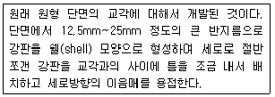
- 콘크리트 라이닝 공법
- 강판 라이닝 공법
- 연속섬유를 이용한 라이닝 공법
- 강판접착 공법
(정답률: 65%)
72. 알칼리-실리카 반응의 가능성을 예상하기 위해 콘크리트 중 알칼리량을 측정하는 시험방법에 속하지 않는 것은?
- 암석학적 시험법
- 화학법
- 모르타르바 방법
- 초음파법
(정답률: 63%)
73. 콘크리트 구조물의 탄산화에 대한 설명으로 옳은 것은?
- 콘크리트 중의 수산화칼슘(pH12~13)이 공기 중의 탄산가스와 반응하여 탄산칼슘으로 변화한 부분의 pH가 8.5~10 정도로 낮아지는 현상을 말한다.
- 콘크리트 중의 수산화칼슘(pH12~13)이 공기 중의 탄산가스와 반응하여 탄산칼슘으로 변화한 부분의 pH가 6.5~8 정도로 낮아지는 현상을 말한다.
- 콘크리트 중의 수산화칼슘(pH8.5~10)이 공기 중의 탄산가스와 반응하여 탄산칼슘으로 변화한 부분의 pH가 12~13 정도로 높아지는 현상을 말한다.
- 콘크리트 중의 수산화칼슘(pH6.5~8)이 공기 중의 탄산가스와 반응하여 탄산칼슘으로 변화한 부분의 pH가 12~13 정도로 높아지는 현상을 말한다.
(정답률: 55%)
74. 황산염 침투에 의한 열화 방지 방법이 아닌 것은?
- C3A함량 증대
- 적절한 공기연행제 첨가
- 플라이 애시 첨가
- 고로 슬래그 첨가
(정답률: 49%)
75. 다음 중 콘크리트의 건조 수축을 적게 발생시키는 경우는?
- 시멘트의 분말도가 높을수록
- 굵은 골재 최대치수가 작을수록
- 철근량이 많을수록
- 습도가 적을수록
(정답률: 43%)
76. 콘크리트가 화재를 받아 피해를 받았을 때, 열화 특징으로서 옳은 것은?
- 500~580℃의 가열온도에서 탄산칼슘이 분해되어 산화칼슘이 된다.
- 750℃ 이상의 가열온도에서 수산화칼슘이 분해되고 탈수되어 산화칼슘이 된다.
- 300℃~500℃ 정도의 가열온도에서 열화한 콘크리트는 냉각 후 수분을 주어 양생해도 강도는 회복되지 않는다.
- 안산암질 골재와 경량골재는 석영질이나 석회암질 골재에 비해 고온까지 안정한 성상을 유지한다.
(정답률: 42%)
77. 균열보수공법 중에서 저압ㆍ지속식 주입공법에 대한 설명으로 틀린 것은?
- 저압이므로 실(seal)부 파손이 작고 정확성이 높아 시공 관리가 용이하다.
- 주입기에 여분의 주입재료가 나아 있으므로 재료 손실이 크다.
- 주입되는 수지는 동심원상으로 확삭되므로 주입압력에 의한 균열이나 들뜸이 확대되지 않는다.
- 주입재는 에폭시 수지 이외에는 사용할 수 없어서 습윤부에 사용이 불가능하다.
(정답률: 54%)
78. 철근부식에 의한 균열 방지 방법 중 잘못된 것은?
- 콘크리트의 피복두께를 늘린다.
- 철근을 코팅하여 사용한다.
- 흡수성이 높은 콘크리트를 사용한다.
- 콘크리트의 표면을 덧씌우기 한다.
(정답률: 57%)
79. 일반적으로 슈미트 해머를 사용하며, 일정한 충격 에너지로 충격을 가하여 움푹 패거나 또는 되밀어치는 크기를 측정하는 비파괴 시험방법은?
- 표면 경도법
- 관입 저항법
- 인발 시험
- 머추리티 미터
(정답률: 58%)
80. 인장 이형철근의 겹침이음의 A급 이음에 대한 아래 표의 설명에서 ( )에 적합한 수치는?
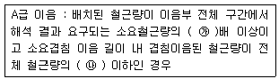
- ㉮ : 1.0, ㉯ : 1/4
- ㉮ : 1.5, ㉯ : 1/3
- ㉮ : 2.0, ㉯ : 1/2
- ㉮ : 2.5, ㉯ : 1/5
(정답률: 56%)